A camera follows a bird through five scenes. The camera is a rectangle-based pyramid whose base is centred on the bird: it moves with the bird along the bird's RRT path and can only turn about the bird's centre. Planning happens in t + rotation, with the original metric NTFields as the model.
Final · whole-path and sub-path sets, 1000 cases each · forest, city, env1, env4: mean of two seeds · corridor: one seed
forest
89.5%
straight motion 26.6%
city
91.7%
straight motion 12.5%
corridor
63.2%
straight motion 0.1%
env1
79.8%
straight motion 0.1%
env4
86.5%
straight motion 4.7%
NTFields success on the whole-path query (the bird flies t = 0 → L, the camera starts and ends in given orientations, forward mode), mean of seeds 0 and 1 (corridor: seed 0), 1000 cases per scene; below each, how often the straight motion would do.
The model
A pose is (t, R): t moves the bird, and with it the base centre, along the bird's path; R turns the pyramid about the base centre. The apex is the camera, D = 50 units from the anchor. A pose is allowed when the pyramid touches nothing in the scene.
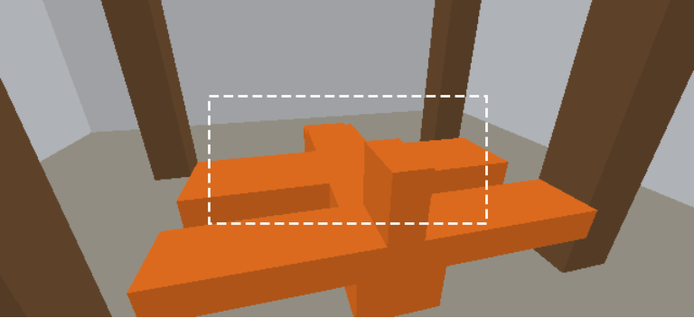
The camera's own view at one pose in the forest. The dashed rectangle is the base of the pyramid (48 × 22 units through the bird's centre); everything between the camera and that rectangle has to stay free.
shape
The bird of the camera + object test, flying at a fixed heading. Its path is an RRT path of its centre (exact bird clearance at least 0.01), shortcut and smoothed; the camera's base rectangle (48 × 22 units) is centred on it, the camera 50 units away.
poses
M = [0, L] × SO(3): arc length t of the bird's centre along its path × the pyramid's rotation. A 4-d slice of SE(3) with the usual metric dt² + |ω / 2π|².
model input
(t − L/2, 0, 0, rotvec / 2π): the path unrolled onto the x axis, so the NTFields network and planner run unchanged; no xyz.
training
800k pose pairs sampled along the path (pyramid clearance band 0.001–0.05), speeds from the exact pyramid clearance and its angular clearance; Eikonal residual with the gradient projected onto M; the bundle's metric NTFields, 8000 epochs.
planning
MPPI on (t, R), forward mode: t never decreases (the bird does not fly backwards). Success = reaching the goal within 0.01 with the pyramid collision-free at every waypoint and 4 sub-steps between waypoints (exact geometry).
Scenes and bird paths
The followed shape is the bird of the camera + object test (48 × 18 × 48 units), the camera the same 51° × 25° camera, now 50 units from the bird's centre. One RRT path per scene, picked from 4–24 candidates so the camera always has some room (at least 15 % of rotations free) while the straight camera motion mostly fails.
scene
the bird flies
L
camera room mean / min
straight ok
RRT iterations
forest
low between the trunks, around one tree
0.96
0.62 / 0.30
27.3
281
city
over a low roof, past a tall building, across a street
0.75
0.67 / 0.35
10.2
181
corridor
the whole serpentine, two U-turns
2.14
0.62 / 0.29
0.0
7894
env1
diagonally down between the upper and lower slabs
0.84
0.41 / 0.19
0.0
70
env4
from above one box down past two others
0.82
0.59 / 0.15
2.3
29
Results
Forward mode, seed 0 unless more seeds are listed. Whole path: t from 0 to L with given start and end orientations; sub-paths: random t0 < t1 at least 0.25 apart. 1000 RRT-verified cases per set.
successcollision (camera hits the scene or the view is blocked)stall (no collision, goal not reached)straight motion collision-free
scene
set
L
straight ok
NTFields success
collision
stall, no collision
seeds
forest
whole path
0.96
26.6
89.5 ± 2.8
8.4 ± 0.8
2.1 ± 1.9
2
forest
sub-paths
0.96
58.4
96.0 ± 1.7
2.5 ± 1.0
1.5 ± 0.6
2
city
whole path
0.75
12.5
91.7 ± 1.8
4.3 ± 0.7
4.0 ± 1.1
2
city
sub-paths
0.75
47.1
96.4 ± 0.2
1.4 ± 0.2
2.1 ± 0.0
2
corridor
whole path
2.14
0.1
63.2
12.8
24.0
1
corridor
sub-paths
2.14
24.6
94.2
2.9
2.9
1
env1
whole path
0.84
0.1
79.8 ± 5.1
13.4 ± 6.0
6.9 ± 0.9
2
env1
sub-paths
0.84
18.0
91.8 ± 1.7
6.9 ± 1.7
1.3 ± 0.0
2
env4
whole path
0.82
4.7
86.5 ± 4.7
5.7 ± 0.6
7.8 ± 4.1
2
env4
sub-paths
0.82
48.8
99.0 ± 0.4
0.2 ± 0.1
0.8 ± 0.4
2
Where the plans fail
Top of each panel: the camera room along the bird's path (the fraction of random camera rotations that are free). Bottom: where the failed whole-path plans collide (first blocked pose, red) or stall (where the plan ends, amber), as a share of all cases (seed 0), each panel on its own scale; the x axis is the bird's progress t / L.
Corridor: pair range and training length
The corridor path is 2.14 long, more than twice the others. With training pairs at most 2.0 apart (the bound the prism study used for paths up to L = 1) NTFields solves 4-33 % of the whole-path cases; with the bound raised to sqrt(L² + 3) = 2.75 it solves 26-63 %, improving with training. Stretching the pairs along t (third run) does not help: it peaks at 42 % and ends at 24 %. On sub-paths all three solve about 90 %. MPPI gets 860 steps here (400 × L).
run
training pair displacement
whole path, epoch 2000
4000
8000
sub-paths, latest
corridor
isotropic in (t, r), length up to 2.0 (the prism study's bound)
4.2
8.0
33.0
89.6
corridor2 (shown above)
isotropic in (t, r), length up to sqrt(L² + 3) = 2.75
25.8
49.5
63.2
94.2
corridor3
t part stretched by L = 2.14, length up to 2 in (t / L, r)
19.6
41.8
24.0
91.8
Training length
Whole-path success of the seed-0 runs at three checkpoints. It moves by up to 9 points between checkpoints, in both directions, so a single run carries several points of noise; a second seed will show how much of it is seed-to-seed variation.
scene
epoch 2000
epoch 4000
epoch 8000
forest
91.6
86.4
86.8
city
87.0
89.7
89.9
env1
83.3
78.7
74.6
env4
74.7
76.0
81.8
Free mode (t may move backwards)
scene
set
L
straight ok
NTFields success
collision
stall, no collision
seeds
forest
whole path
0.96
26.6
87.7 ± 4.2
7.6 ± 0.1
4.8 ± 4.2
2
forest
sub-paths
0.96
58.4
95.1 ± 2.0
2.3 ± 0.7
2.6 ± 1.3
2
city
whole path
0.75
12.5
91.1 ± 1.6
4.0 ± 0.2
5.0 ± 1.7
2
city
sub-paths
0.75
47.1
97.0 ± 0.3
1.4 ± 0.2
1.6 ± 0.1
2
corridor
whole path
2.14
0.1
51.3
8.5
40.2
1
corridor
sub-paths
2.14
24.6
89.5
1.8
8.7
1
env1
whole path
0.84
0.1
78.7 ± 4.9
11.3 ± 7.5
10.0 ± 2.7
2
env1
sub-paths
0.84
18.0
91.8 ± 1.2
6.0 ± 0.7
2.2 ± 0.5
2
env4
whole path
0.82
4.7
82.4 ± 3.3
6.6 ± 1.0
11.0 ± 2.3
2
env4
sub-paths
0.82
48.8
99.0 ± 0.4
0.2 ± 0.0
0.9 ± 0.4
2
What the numbers say
NTFields learns the constrained problem. On the whole-path query (the bird flies the whole path, the camera starts and ends in given orientations) it solves 79.8-91.7 % of the cases in forest, city, env1 and env4 (mean of two seeds) and 63.2 % in the 2.14-long corridor, where the straight camera motion succeeds in 0.1-26.6 %. On sub-paths it solves 91.8-99.0 %.
In the short scenes it fails where the camera has the least room. In forest, env1 and env4, 75-90 % of the collisions happen in the first quarter of the path, where the fraction of free camera rotations is lowest; in env4 a second cluster sits just before the room collapses at t/L 0.7. The start of every path is also the end of M with the fewest training pairs, so the two effects coincide there.
Long paths need training pairs as long as the path, and longer training. The corridor goes from 4 % (pairs at most 2.0 apart, epoch 2000) to 63 % (pairs up to 2.75, epoch 8000); its remaining failures are plans that stall at the start, where the camera has plenty of room.
Constraining the bird to move forward costs nothing: the free mode (t may decrease) is 0.6-4.1 points worse in the short scenes and 11.9 points worse in the corridor.
Single runs are noisy on the whole-path query: the two seeds differ by up to 10 points (env1 74.6 vs 84.9 %, env4 81.8 vs 91.2 %), and one run moves by up to 9 points between epochs 2000 and 8000. Sub-paths agree within 3.5 points across seeds.
Per scene
forest
Whole path: 89.5% success (8.4% collision, 2.1% stall); sub-paths: 96.0%. The bird flies low between the trunks and around one tree, under the crowns. 90 % of the collisions (both seeds) happen in the first quarter of the path, where the camera room is smallest (32 % of rotations free over the first tenth).
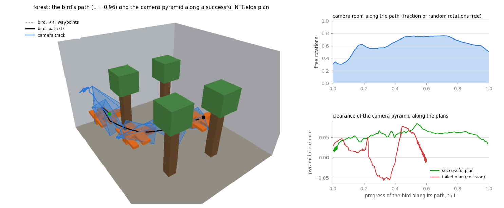
Seed 0. Left: the bird's RRT waypoints (dashed) and smoothed path, the bird and the camera pyramid at points of a successful plan (case 289), the camera's track (blue). Right: the fraction of camera rotations that are free along the path, and the pyramid's clearance along the successful plan and along a failed one (collision, case 12).
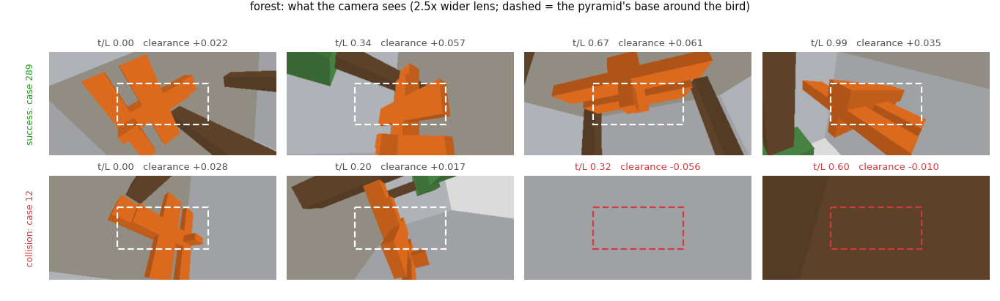
What the camera sees, rendered with a 2.5× wider lens; the dashed rectangle is the pyramid's base around the bird, the part of the view a plan must keep clear (red where an obstacle is inside it).
city
Whole path: 91.7% success (4.3% collision, 4.0% stall); sub-paths: 96.4%. The bird skims a low roof, passes a tall building and crosses a street. The camera has room almost everywhere, failures are spread along the path, and it is the scene NTFields handles best.
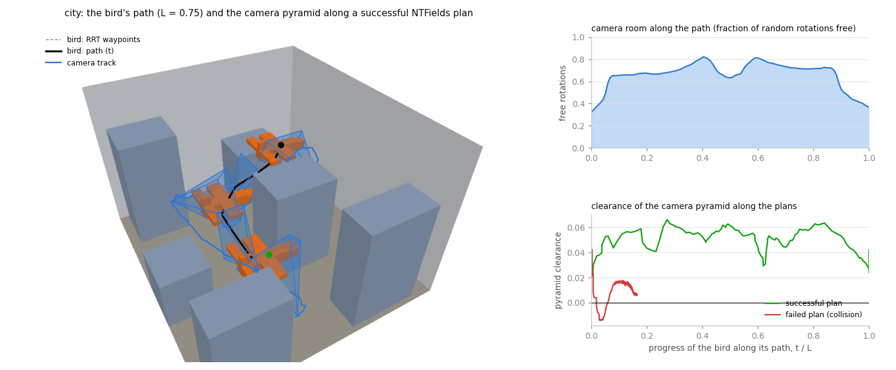
Seed 0. Left: the bird's RRT waypoints (dashed) and smoothed path, the bird and the camera pyramid at points of a successful plan (case 466), the camera's track (blue). Right: the fraction of camera rotations that are free along the path, and the pyramid's clearance along the successful plan and along a failed one (collision, case 29).
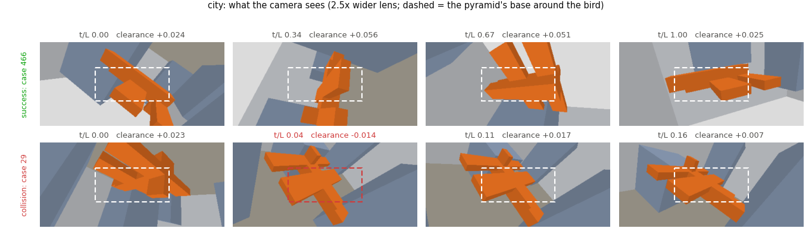
What the camera sees, rendered with a 2.5× wider lens; the dashed rectangle is the pyramid's base around the bird, the part of the view a plan must keep clear (red where an obstacle is inside it).
corridor
Whole path: 63.2% success (12.8% collision, 24.0% stall); sub-paths: 94.2%. The bird flies the whole serpentine, two U-turns around the walls, 2.14 long; the straight camera motion succeeds in 0.1 % of the cases. This is the model trained with pairs up to 2.75 apart (see the corridor table), one seed. Its failures differ from the other scenes: 81 % of them end in the first tenth of the path although the camera has plenty of room there (67 % of rotations free), and two thirds are plans that never get going. That is the field's long-range accuracy over a 2.14-long path, not the geometry.
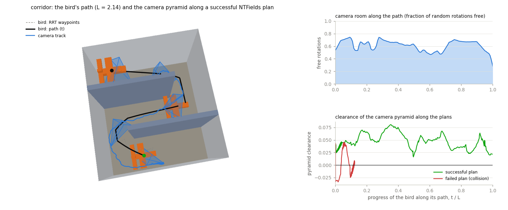
Seed 0. Left: the bird's RRT waypoints (dashed) and smoothed path, the bird and the camera pyramid at points of a successful plan (case 218), the camera's track (blue). Right: the fraction of camera rotations that are free along the path, and the pyramid's clearance along the successful plan and along a failed one (collision, case 4).
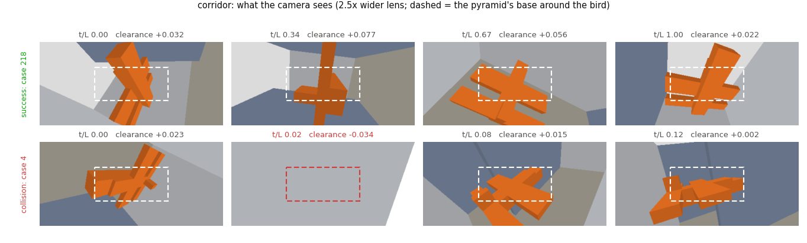
What the camera sees, rendered with a 2.5× wider lens; the dashed rectangle is the pyramid's base around the bird, the part of the view a plan must keep clear (red where an obstacle is inside it).
env1
Whole path: 79.8% success (13.4% collision, 6.9% stall); sub-paths: 91.8%. The bird descends diagonally between the upper and lower slabs. The camera room stays near 23 % over the first 40 % of the path, and that is where NTFields fails: 75 % of the collisions (both seeds) happen in the first quarter. This scene has the largest seed spread (74.6 and 84.9 %).
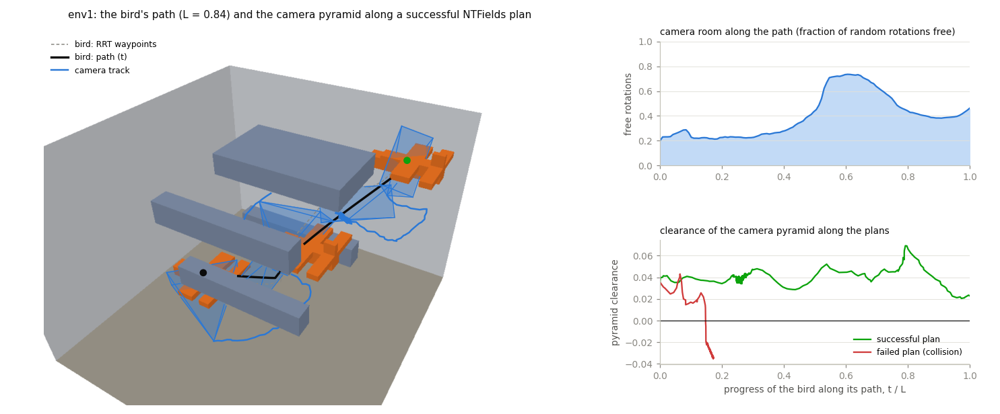
Seed 0. Left: the bird's RRT waypoints (dashed) and smoothed path, the bird and the camera pyramid at points of a successful plan (case 276), the camera's track (blue). Right: the fraction of camera rotations that are free along the path, and the pyramid's clearance along the successful plan and along a failed one (collision, case 2).
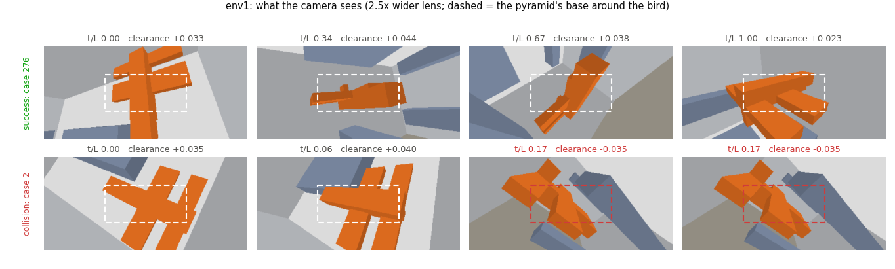
What the camera sees, rendered with a 2.5× wider lens; the dashed rectangle is the pyramid's base around the bird, the part of the view a plan must keep clear (red where an obstacle is inside it).
env4
Whole path: 86.5% success (5.7% collision, 7.8% stall); sub-paths: 99.0%. The bird starts just under the ceiling above one box and descends past two others. Failures come in two clusters: at the start, the tightest spot of any path (21 % of rotations free over the first tenth), and at t/L 0.6-0.7, just before the camera room collapses from 77 % to 28 %.
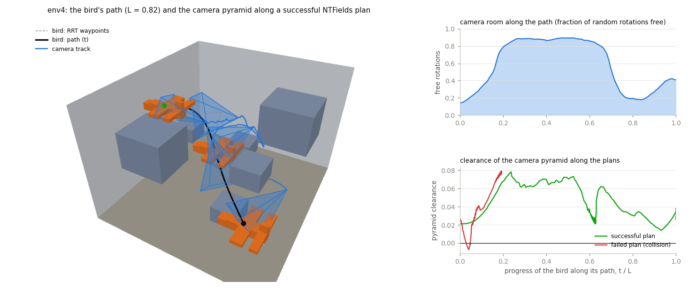
Seed 0. Left: the bird's RRT waypoints (dashed) and smoothed path, the bird and the camera pyramid at points of a successful plan (case 37), the camera's track (blue). Right: the fraction of camera rotations that are free along the path, and the pyramid's clearance along the successful plan and along a failed one (collision, case 48).
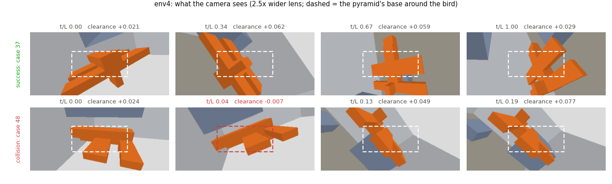
What the camera sees, rendered with a 2.5× wider lens; the dashed rectangle is the pyramid's base around the bird, the part of the view a plan must keep clear (red where an obstacle is inside it).
Files
Code: models/constrained_movement/ (geometry, renderer, scripts), tests tests/test_constrained_movement.py; training train/train_metric_path.py.
Bird paths: datasets/3dshape/paths/cm_<scene>_a.npz; cells datasets/3dshape/data/cm_<scene>_a; test sets testing_data/3dshape/cm_<scene>_a_{full,seg}.